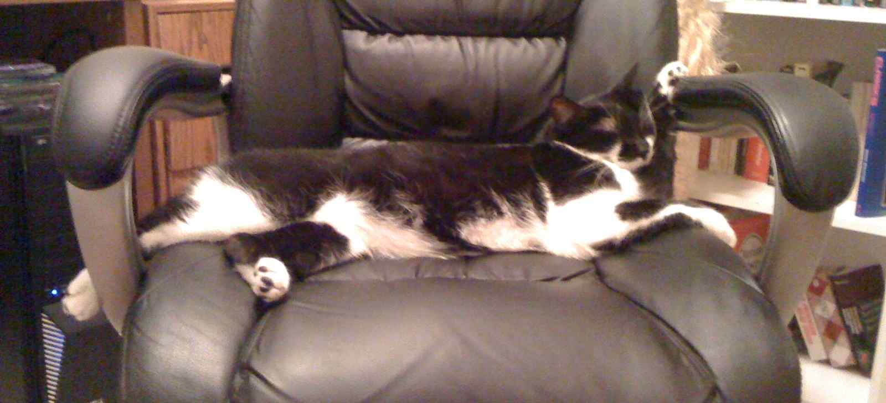
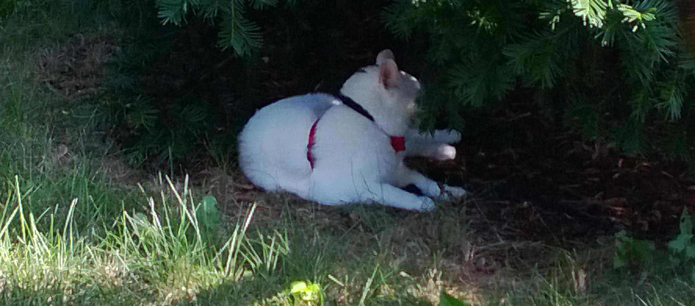

Opposites really do attract, especially if you're talking about ions. I know lots of useless things, now I'm hoping to get something actually lucrative into my brain.
Something quirky about me
I work in a call center located on a former Air Force base recently named one of the Top 10 Creepiest Abandoned Places in Illinois. This is a shot of the old powerplant and watertower. After this was taken the water tower was painted sky blue, which is a great color for a tall structure located near a small commercial airport with a lot of low flying aircraft.
Some things I love
I have two cats, or rather I am the personal servent of two cats. The black one on top is named Tim and as you can see, he has a really hard time relaxing. The little lady below him is named Naria and she is a princess in every sense of the word. I brought her home years ago after she showed up at an old girlfriends house.
 
Inside my head
I have plenty of extra space in my head so I like to keep a small flashlight in there for emergencies. Just kidding, I keep my flashlight on my keyring along with my Leatherman. My head is filled with my amazing brain.
Get busy livin'
Call me: 1-555-CUP-CAKE
Email me: jonathon.nordquist@gmail.com
I announce all my new psychoses through Facebook & Twitter and even take requests!


© 2014 Jonathon Nordquist. All rights reserved